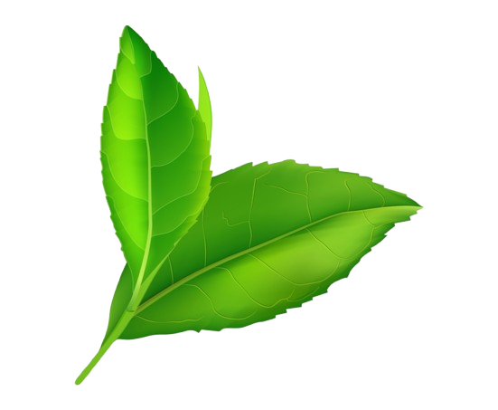

Over Two Decades of Excellence
Kanda Seed Company was established in 1998 with a simple mission: to provide farmers with the highest quality onion seeds for healthy, productive crops. What began as a small family operation has blossomed into one of the region's most trusted seed suppliers.
Over the years, we've cultivated strong relationships with farmers across the country, learning from their experiences and continuously innovating our seed varieties to meet the challenges of changing climates and market demands.

Rooted in Trust, Growing with Innovation